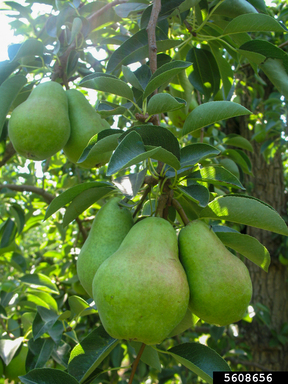

Current Koppen Climate Zone: Csb
Warm summer mediterranean: warm (not hot), dry summers, never above 72°F, cool ocean currents, upwelling, higher latitudes → cool.
Projected Koppen Climate Zone in 2100: Csb
Warm summer mediterranean: warm (not hot), dry summers, never above 72°F, cool ocean currents, upwelling, higher latitudes → cool.
2023 Population: 55,733.
Average SUHI daytime: 0.11°C
Average SUHI nighttime: 0.12°C
Climate in 2100 Similar to current Portland
Urban Trees Common in Portland / Csb

Acer platanoides (Norway maple)
Prunus - cherry (Flowering cherry)

Acer rubrum (Red maple)

Pyrus spp. (Pear species)

Malus spp. (Apple species)
Cornus spp. (Dogwood species)
Fraxinus spp. (Ash species)
Acer palmatum (Japanese maple)
Acer spp. (Maple species)
Styrax japonicus (Japanese snowbell)